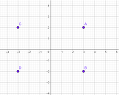

Desenhe o plano cartesiano em seu caderno, marque os pontos e encontre os simétricos. Mostre seus resultados quando for chamado.

Considere o ponto A(3,2) do plano cartesiano.
Qual o seu simétrico em relação:
Ao eixo das abscissas x e suas coordenadas?
Ao eixo das ordenadas y e suas coordenadas?
À origem (0,0) e suas coordenadas?
Formalização Ou seja o simétrico em relação ao eixo x troca-se o sinal da coordenada y
o simétrico em relação ao eixo y troca-se o sinal da coordenada x
o simétrico em relação a origem (0,0) troca-se o sinal das duas coordenadas